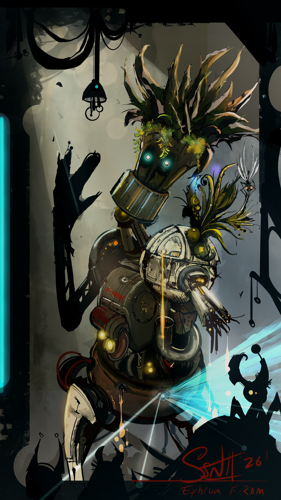
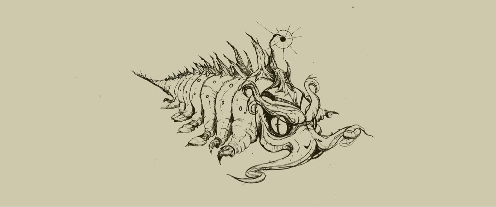
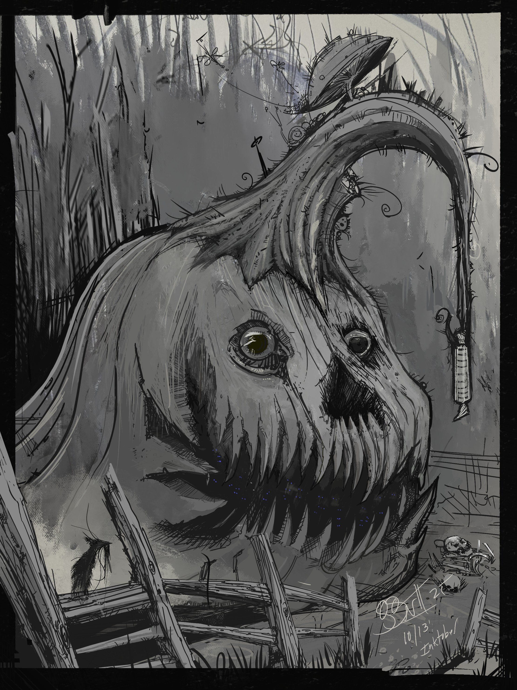
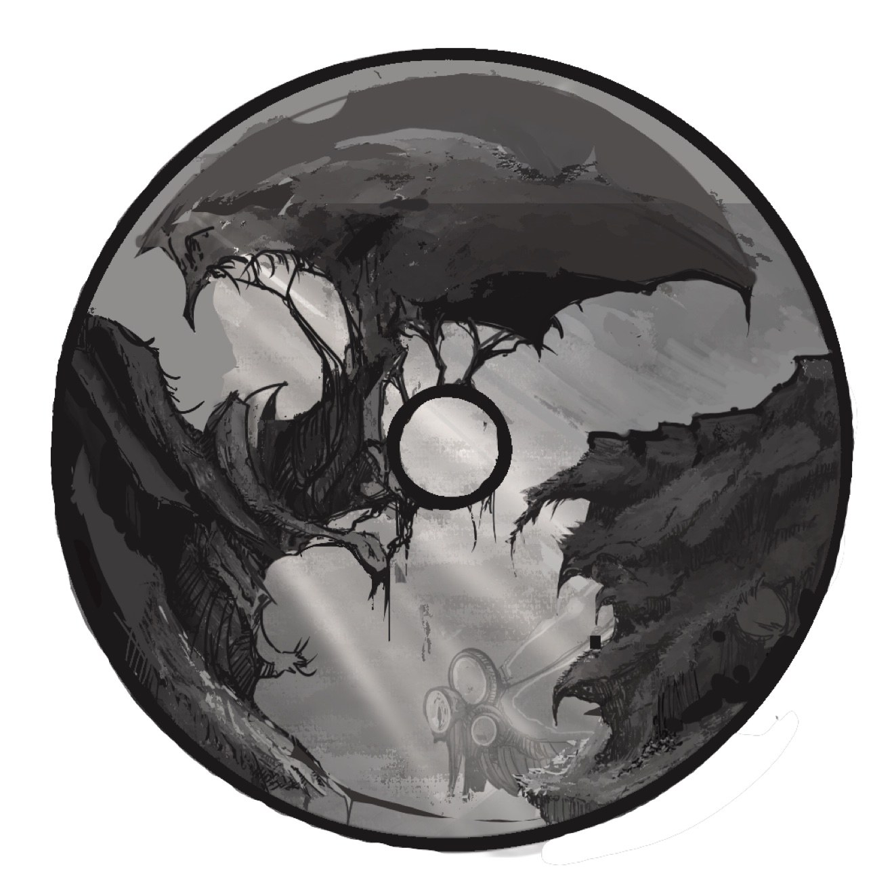

 S. NELSON II.
S. NELSON II.
Art Director & Illustrator
Twenty-five years building game worlds from the ground up — fifteen of them in AAA. Now all in on 2D.

Art Director & Illustrator
Twenty-five years building game worlds from the ground up — fifteen of them in AAA. Now all in on 2D.
All digital — the range, up front.
F-R0M. Digital.

Where it all started. Digital.

Digital.

Digital.

Fan art — the alien creature from Craig Robertson's Jon Ryan books, drawn while reading them. Digital.

Baby dragon, falls from its nest. Digital.

Digital.

Second take on the same sketch. Digital.

Digital.

Digital.

Digital.

The studio mark. Digital.
I spent 15 years building AAA game worlds from the ground level — projects worth hundreds of millions of dollars.
On Elder Scrolls Online I built the cities of the Morrowind chapter, the Imperial City, and the PvP war zones. Before that, city architecture on Warhammer Online. I finished as an Art Director at Microsoft.
Now I'm all in on 2D — art direction and illustration.


The short version.
I'm Steve. Twenty-five years in games — starting at Elmer Interactive in 2000, fifteen of them inside AAA studios, finishing as an art director at Microsoft. My specialty was always materials and texture: the way a surface tells you its history.
These days I draw full-time as S. Nelson II art — the creatures, characters, and dark little worlds in my head, all digital, out of Swamp Shell Industries, my one-man studio. I'm also a musician, which keeps bleeding into the visuals, and an avid gardener when I'm not at the desk.
I take on art direction and illustration work. The contact's below.